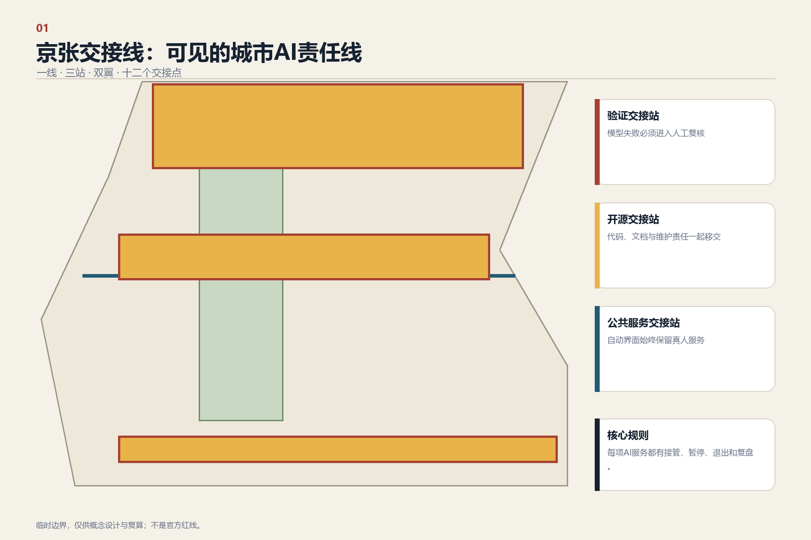
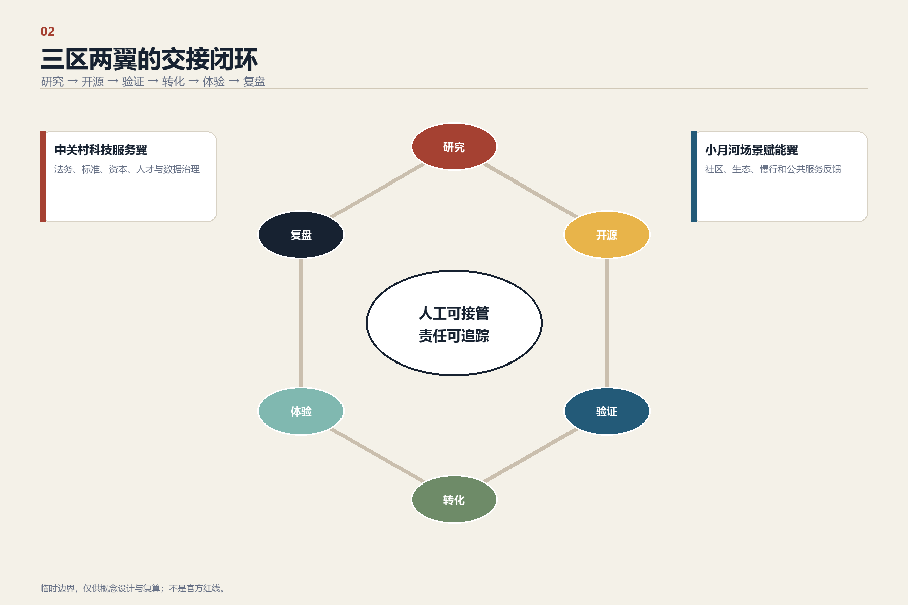
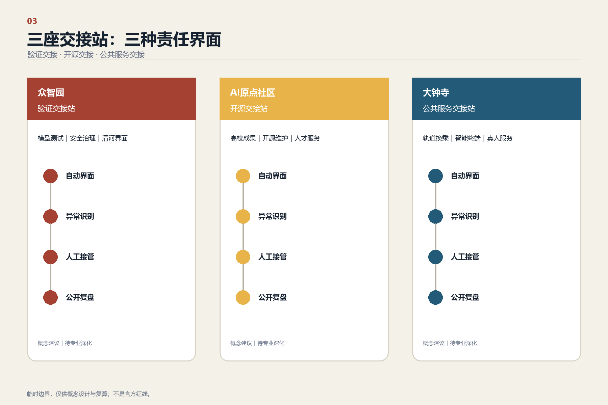
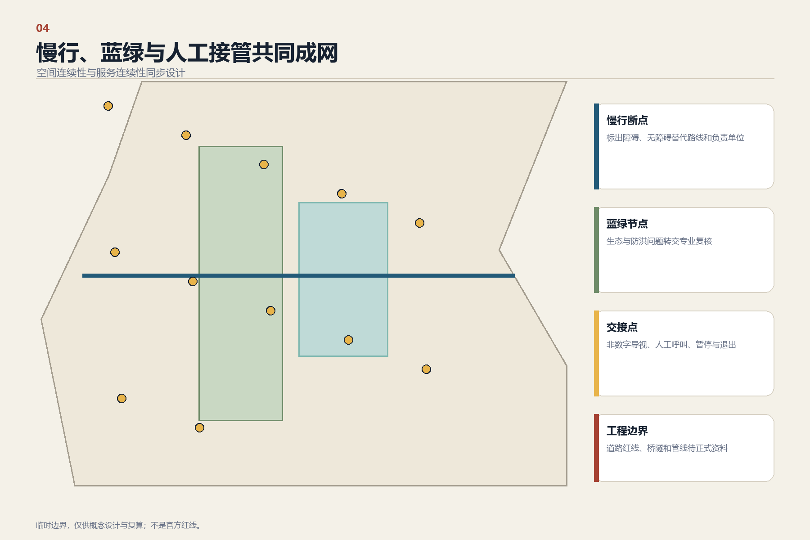
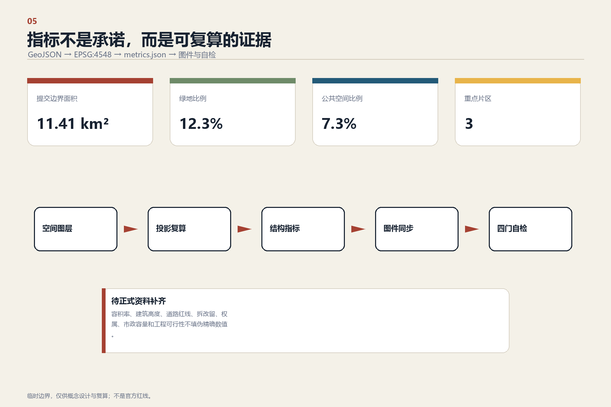

成果索引总览地图三层范围重点区域用地分区交通慢行蓝绿公共空间建筑更新项目AI 场景核心指标任务覆盖自检状态来源假设
01
总体结构
一线、三站、双翼、十二个交接点。

02
创新闭环
研究、开源、验证、转化、体验与复盘。

03
三处重点区域
验证交接、开源交接与公共服务交接站。

04
慢行与蓝绿网络
空间连续性与服务连续性同步设计。

05
指标与证据
可复算指标与待补正式控制条件严格区分。

site_area_sqm11.41 km²
green_ratio12.34%
public_space_ratio7.33%
十二个交接场景
- 01开源发布厅
- 02安全治理沙盒
- 03端侧算力驿站
- 04AI慢行导航
- 05国际路演客厅
- 06清河低碳创新廊
- 07近校成果转化街
- 08数据要素会客厅
- 09AI生活服务街
- 10全球AI活动周
- 11无障碍交接导航
- 12模型事故复盘庭